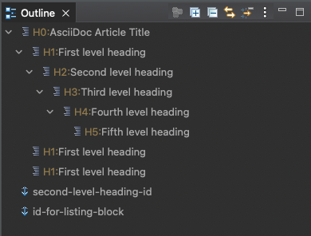

Eclipse Capra natively supports AsciiDoc files using the
Eclipse AsciiDoctor Editor. When an Asciidoc file is openend in the editor, its contents are shown in the outline view.

Figure 1: The outline view of the AsciiDoc Editor.
From there, it is possible to drag and drop the entries into Eclipse Capra’s Selection View.
Two different ways to trace
Eclipse Capra supports to different ways to trace to elements within an Asciidoc file:
Trace to any element based on its
offset within the file. This means that Eclipse Capra will store at which position in the file the element appears.
Trace to any identifier element. This means that Eclipse Capra will store the identifier directly without storing the position.
These two ways of tracing have a fundamental difference when retrieving the original element in the Asciidoc file again:
When tracing to an element based on the
offset, if any text is added or removed before the element appears in the file, it can no longer be located.
When tracing to an identifier element, Eclipse Capra will traverse the entire file to find the identifier. This means that this method is more robust when the text changes. However, each identifier needs to be unique within the file. If the name of the identifier is changed, Eclipse Capra will no longer be able to find it.
When using the identifier-based method, the user needs to add identifiers into the text at the right positions, e.g., after a headline. This requires some additional work as well as a consistent naming scheme.